Do you ever dread your routine shopping trip?
Nobody likes wasting time in the supermarket and current shopping experiences are full of inefficiencies and frustrations. Just consider your typical shopping process for a moment. Step 1: Spend time finding the product you're looking for in a potentially vast and poorly organized store. Step 2: Spend time selecting a product from a wide-array of brands with different labels, contents, and information. Step 3: Spend time waiting in a checkout line. Notice any time-related themes here...? Although the steps may be different, each has one thing in common: the use of a shopping cart. We want to use this commonality as a solution to wasting time in the supermarket.
In order to accelerate and simplify your shopping trip, we propose the creation of a SmartCart: a traditional shopping cart merged with modern technology. Imagine now that you are embarking on your usual shopping trip, but THIS time you have a SmartCart.
The first item on your list is shampoo, but you have no idea where to find it. Try using the screen attached to the cart. Just type 'shampoo' into the search box and follow the on-screen map directions through the store. Now you need to choose what type of shampoo youd like. Just use the side-by-side brand comparison tool on the screen to find exactly what you're looking for. Finally, scan your shampoo using the handheld barcode scanner attached to the cart and simply place the product in one of the ready-to-go bags already in the cart. Once you have everything on your list its time for checkout. But wait. There is no checkout. You've already scanned and bagged all of your products as you shopped. You've been ready to pay using your mobile device and exit the store all along.
The SmartCart is the future of the shopping process. Shopping no longer needs to be such a complicated chore. No more waiting and no more frustration. With the SmartCart, you have full control over how YOU want to shop. Next time you go shopping, consider the impact the SmartCart could have on your shopping routine.
If you hate wasting time in the supermarket as much as we do, we'd love to have both your ideas and your support. Happy shopping!
Storyboard
Blah blah blah
Data Modeling/Analysis
The following diagram is a simplified model of what key data the SmartCart system will record and analyze. The customer is the focal point of both the diagram and the system. A customer will be represented by an anonymous number until a non-cash payment is recorded. If card or online payments are used, specific customer details can be recorded such as firstName, lastName, and birthday.
A CustomerInstance represents a single moment in time during the shopping trip. This instance records a specific SmartCart at a specific location with a specific inventory of items. With this information, data analysts can track a customer's location, movement, idle time, added products, and buying tendencies throughout the duration of their shopping experience. Analysis can be used to identify store problems including product organization issues, customer bottlenecks, and ineffective advertising.
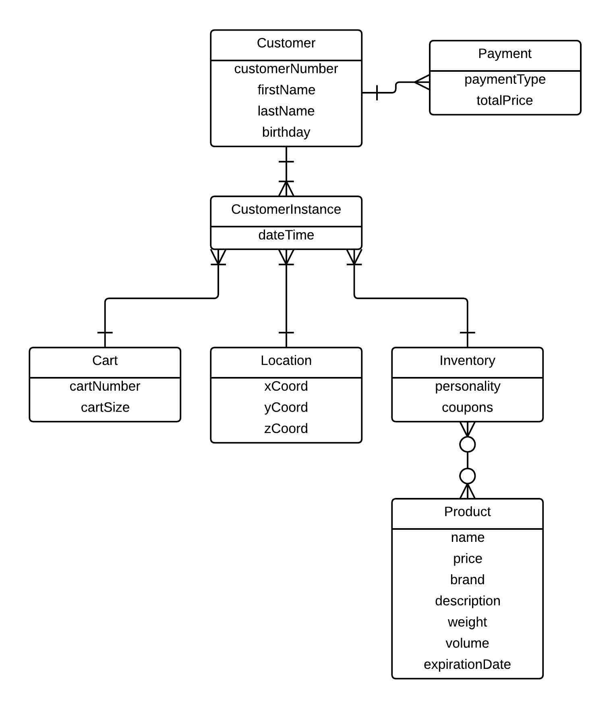
The following diagrams represent how data analysts might view the data and make improvements to the store. The first diagram shows how real-time data can be used to provide immediate feedback to a variety of customers. For example: if theft is occurring, large items are being purchased, or carts have been idle for a long period of time then customer service may need to be notified.
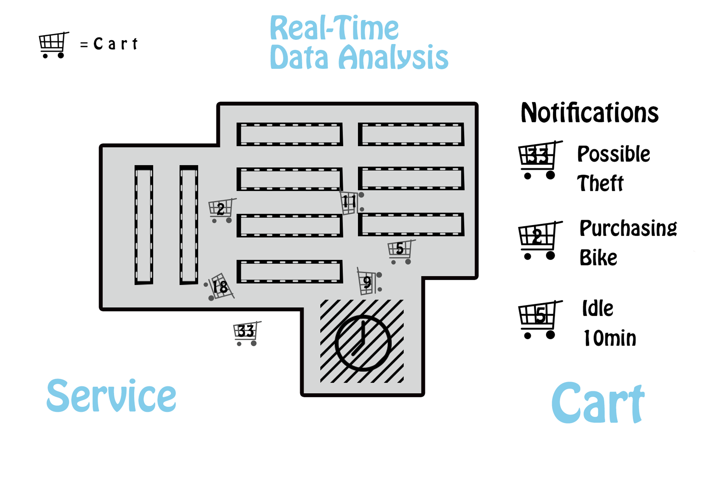
The second diagram represents average idle cart time. If idle time is high in a particular area, the store may want to reorganize.
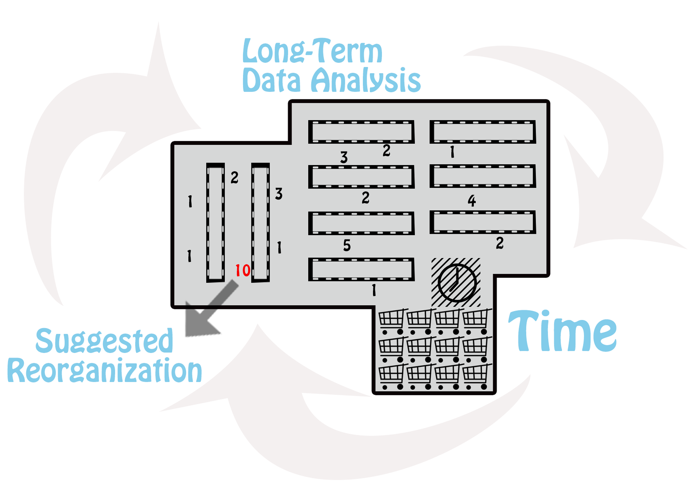
The third diagram represents average advertisement views in different areas of the store for a particular time frame. If ad views are low in one area, the store may want to replace current ads with new ones.
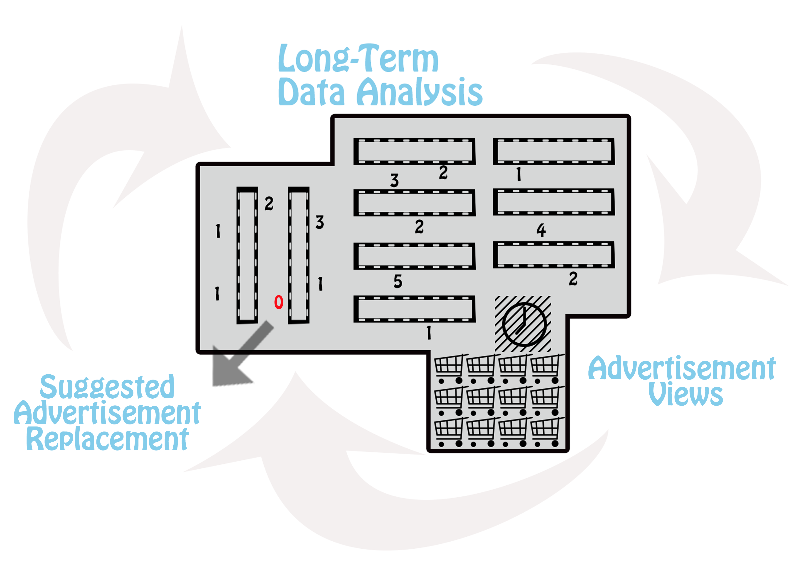
Prototypes
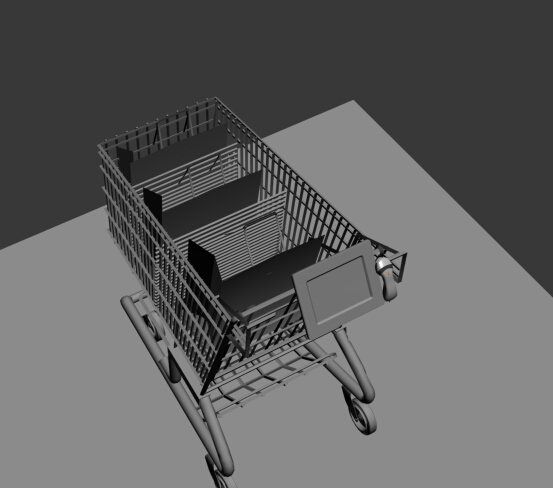
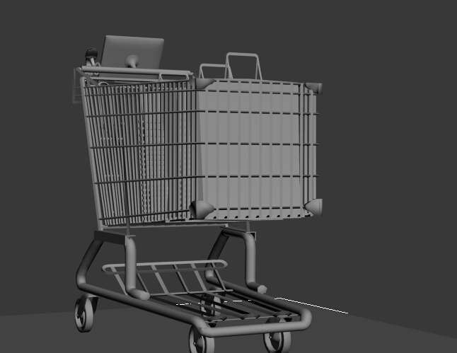
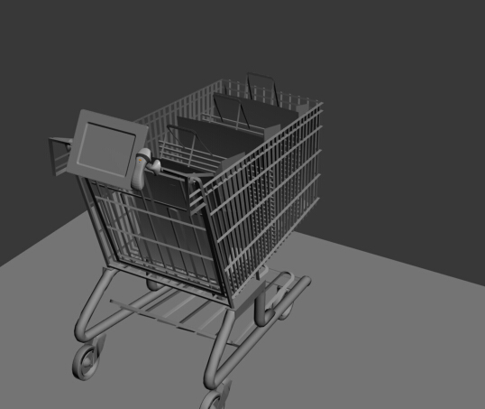
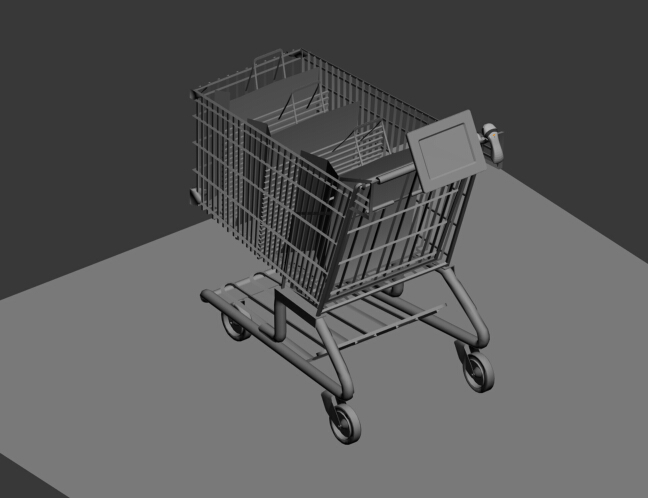
Business Proposition
- 70% of brand decisions are made in the store.
- 73% of customers that see an in-store media advertisement will buy that product the same day.
- The golden wait time is 3 minutes. After this period, customers perceive their wait to be much longer.
- Self-checkout reduces checkout time by up to 40%.
- The number of self-checkout units has increased from 92,600 in 2008 to 430,000 in 2014.
Our key values are making the shopping process more efficient and creating a better, simplified experience for retail customers. Our target user is Lucy - the young, busy, and organized shopper. The SmartCart will become Lucy's partner during her independent shopping process.
We will give our supermarket retailer valuable shopping data based on both both real-time and long-term analysis. Retailers can improve their store organization and advertisement effectiveness.
Our revenue will stem from the sale of SmartCarts, system maintenance, and the improvement of data analytics. To make all of this happen, we need some key partners, activities and resources. Our key partners are Ali Pay, user review providers, and Carrefour. Most of our key resources are technology-oriented, including iBeacon, the software on the digital screen, and the database. Key activities include experience events to introduce users to the SmartCart interface as well as the production of advertisement videos for the screen. This is our cost structure. In summary, there are two parts: the production of carts and system development for retailers.

Design Process
We spent one week doing field studies and investigating how people shop in the grocery store. We interviewed 20 individuals and observed 10 people in a Carrifour supermarket near Peking University.
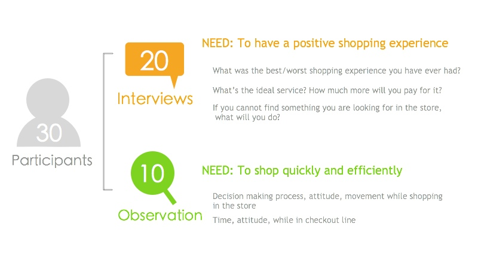
Based on our observations, we developed our persona: an organized female student named Lucy.
- Lucy goes shopping about twice a month at Carrefour, a nearby supermarket.
- Lucy always uses a shopping cart so that she doesn't need to carry her products around with her.
- She makes a list in advance, but usually ends up buying additional products that her friends recommend.
- When Lucy does find the products she needs, she spends a large amount of time comparing the price and quality between similar brands.
After our user study, we brainstormed possible features and weighed the impact against the difficulty of implementation. In the end we decided to create a shopping cart with a digital screen that will help people primarily through product comparison and self check-out.
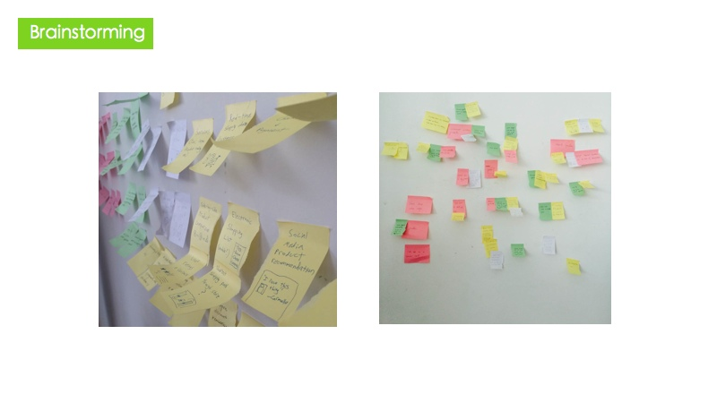
During prototyping, we went through 5 iterations. We initially started with paper prototypes. We later developed clickable wireframes, a hi-fi UI, 3D cart models, and finally an interactive prototype on iPad.
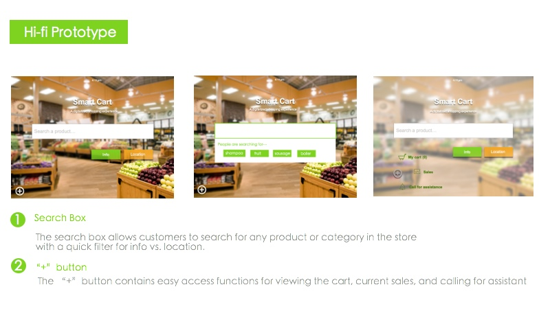
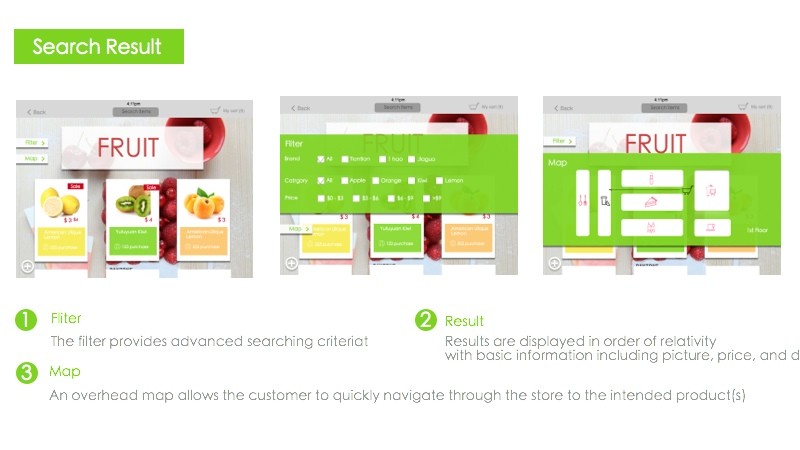
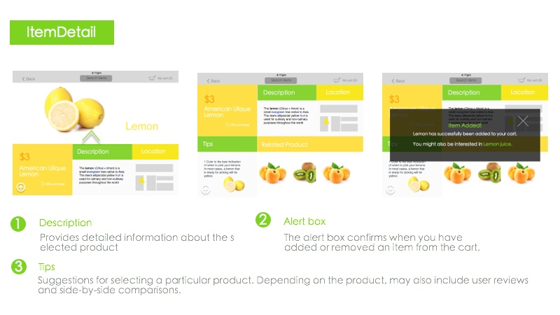
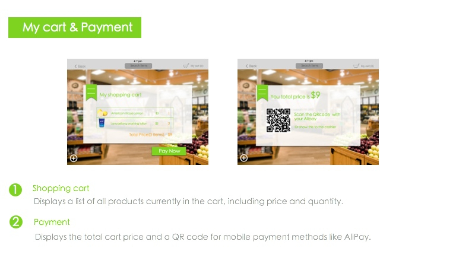
The Team
We are the SmartCart team. Our team consists of six wonderfully innovative students with a variety of interests and backgrounds. Each team member has his/her own areas of expertise from technology to user experience to business analysis. We have one American student from Seattle, WA and five Chinese students from around the country. Together we represent a mixing pot with a vision to simplify the routine shopping experience. Our team assembled during an intensive three-week product development course at Peking University in Beijing.
Elliot
Technologist, User Analyst
Elliot is an undergraduate at the University of Washington in Seattle. He is studying Informatics and is interested in application development, data, and cutting-edge technology.
Ellen
Information Analyst
blah 1 blah 1
Kevin
Product Designer
blah 1 blah 1
YaYa
Manager, Business Analyst

blah 1 blah 1
Anthony
Technologist

blah 1 blah 1
Katy
UX Designer
blah 1 blah 1
More
Our PowerPoint presentation can be found here.